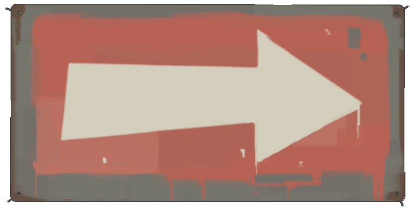
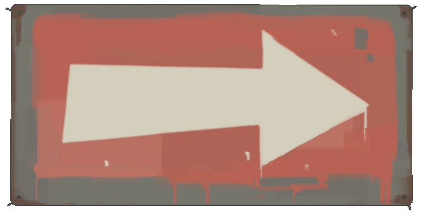

menu
minigames
¿ Que es Team Fortress 2 ?

Team Fortress 2 es un videojuego en linea de disparos en primera persona producido y publicado por Valve en 2007, siendo este la secuela del mod de Quake de 1999 (conocido como Team Fortress Classic).
Siendo inicialmente parte de la Orange Box, es un juego actualmente "free-to-pĺay" (es decir, un juego gratuito) disponible tanto en windows, macOS y linux mediante la plataforma Steam, como en Playstation 3 y Xbox 360 mediante la anteriormente mencionada Orange Box.
¿ que hacemos ?
Dentro de Team Fortress jugaremos como el equipo R.E.D (Reliable Excavation Demolition) o B.L.U (Builder League United) en los cuales podremos elegir alguna de las nueve Mercenarios o Clases: Scout, Soldier, Pyro, Demoman, Heavy, Engineer, Medic, Sniper y Spy.
Con los mercenarios podrémos jugar en una gran variedad de lugares y ubicaciones con distintos modos de juego que giran alrededor de conceptos especificos: capturar una bandera mientras se defiende la propia, empujar un carro por una pista hasta llegar al final y tomar/defender uno o varios puntos de control fijos del equipo enemigo. usualmente existe una limitacion de tiempo tanto para limitar la duración de ciertos modos de juego(como pueden ser el ataque/defensa) e insentivar a que se cumpla el objetivo.
Ademas de los modos de juegos usuales, existe una variedad disponible solo durante eventos festivos(como puede ser navidad o halloween). como pueden ser supervivencia a zombies, carritos chocadores,soccer con carritos, plataformas que caen y peleas con enemigos relacionados con la festividad.
Existe un modo de juego que nos permite jugar con un personaje fuera de los nueve mercenario, siendo este "Versus Saxton Hale"; en el cual el equipo R.E.D (en el cual se encuentran casi todos los jugadores) deben derrotar a Saxton Hale(controlado por el jugador restante) que funciona como un tipo de "jefe". sino se logra vencerlo, se permite que alguno de los dos "equipos" capture un punto de control.